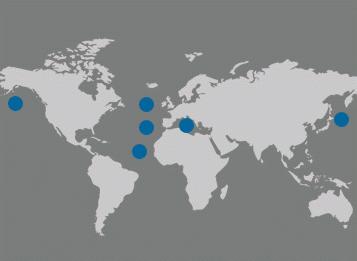
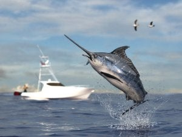
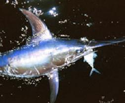
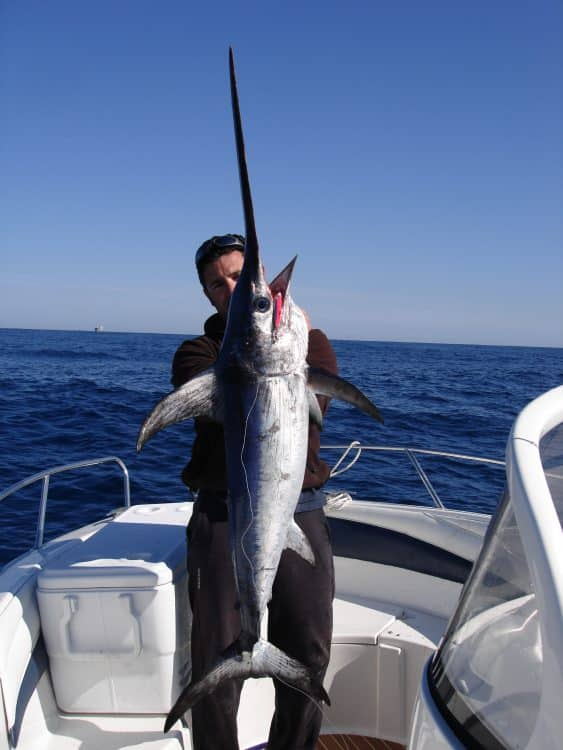

ASPECTOS IMPORTANTES DEL PES ESPADA
NOMBRE | DESCRIPCION | IMAGEN |
| Habitad |
Los peces espada están distribuidos alrededor del mundo en aguas tropicales, subtropicales y templadas, entre los 45º norte y los
45º sur aproximadamente. Tienden a concentrarse donde se encuentran corrientes marinas importantes.
|  |
| Comportamiento |
El pes espada es un pes que es agresivo y voraz, se vale de su pico y de su velocidad, para atacar a sus presas y defenderse
de depredadores, esto gracias a que es capas de conservar la termperatura de su cuerpo,se sabe que los peces espada suelen mantenerse
en aguas más profundas durante el día, mientras que a la noche ascienden a zonas más superficiales.
|  |
| Alimentacion |
La alimentación de los adultos incluye peces pelágicos como el atún, barracuda, pez volador, verdel, etc. También comen calamares
cuando éstos están disponibles
|  |
| Depredadores |
El individuo adulto tiene pocos depredadores naturales pero las orcas y los tiburones lo incluyen en su alimentación. El ser humano
es la amenaza más grande, pues la pesca excesiva (comercial y deportiva) ha provocado que las poblaciones de algunas zonas se reduzcan.
|  |